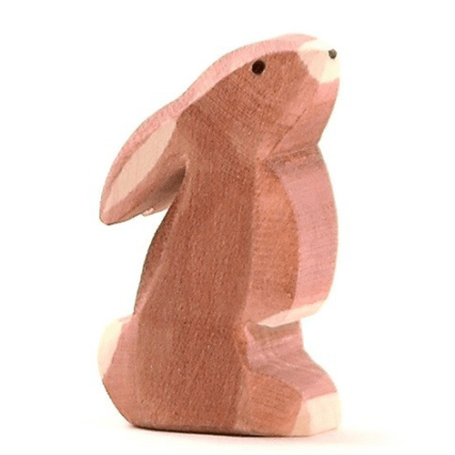

Quality

Wooden toys never really go out of style. There’s rarely any big trend around the latest wooden pieces, but they’ve been enjoyed for generations and are still going strong. Unlike plastic digital trends that are ultimately forgotten in the heap of new trends, each year, wooden toys are as healthy as they are timeless. Wooden toys tend to be the ones most handed down and inherited. They’re not indestructible, but they are durable so long as you take proper care of them. Wood is among some of the safest materials nature provides for babies and children. These wooden toys are sanded and cleaned with beeswax to create a soft feel. Instead of harsh and sharp plastics, children can play with soft, smooth wooden figurines. These toys are made to last for years. They are durable and reliable, unlike plastic toys that eventually end up in the trash. The way toys look might not be on everyone’s list of criteria for selection, but beauty does matter—especially when choosing toys that will last. Whether painted, stained, or left natural, wooden toys, furniture, and art are more aesthetically appealing. Wooden toys are a natural fit for spaces in homes since they’re often stackable, easy to clean up, and attractive to display.